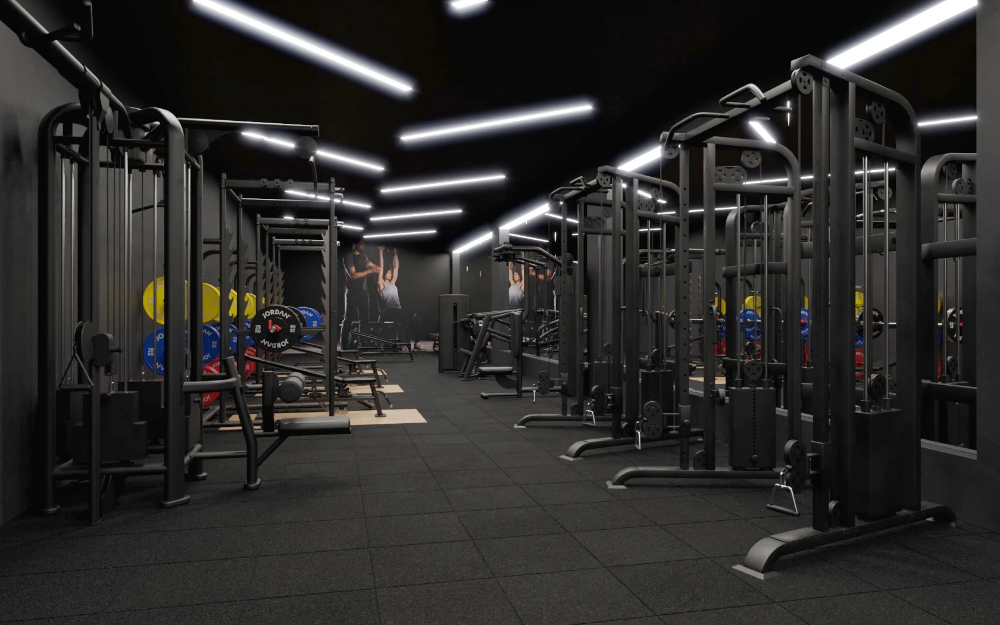
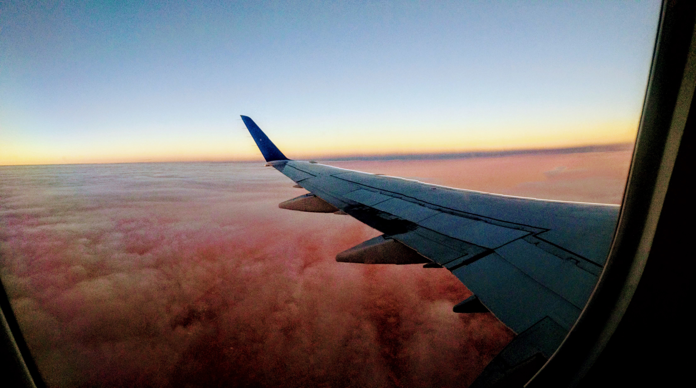

Gym

How much do you bench? Is a common gym term you will hear.
Luckily, I can say I am proud of my answer now. I love hitting the
gym as often as I can. I started working out my senior year in
high school and haven’t stopped since! 8 years later I still have
the same commitment as day one! Growing up with a skinny frame, I
always wanted to put on some muscle. I had a coworker from my
first job introduce me to the foundations of bodybuilding. That’s
all I needed to spark the fire in me. Fast-forward, it became a
part of my daily routine. Goals and routines might change but the
commitment will always be there. In the gym you can find me doing
strength training, body building, and most recently, cardio.
Gaming
 Starting out having a Nintendo64 as my first
console, to now owning a PS5, I can say gaming has a came a long
way! Personally, I first started playing video games because of my
family. When I would see my cousins at family parties, we would
gather around the tv and plug-in. Games always varied between
Mario Party, FIFA street, Mortal Kombat or whatever was trending
at the time. It was a for all of us to bond. Growing up, I found
it as a way to stay connected to friends thanks to online gaming.
Even though I still play video games to stay in touch, I now
mainly like to play to decompress from life. My favorite games at
the moment are EA FC 24(FIFA), Rocket League, and Call of Duty.
Starting out having a Nintendo64 as my first
console, to now owning a PS5, I can say gaming has a came a long
way! Personally, I first started playing video games because of my
family. When I would see my cousins at family parties, we would
gather around the tv and plug-in. Games always varied between
Mario Party, FIFA street, Mortal Kombat or whatever was trending
at the time. It was a for all of us to bond. Growing up, I found
it as a way to stay connected to friends thanks to online gaming.
Even though I still play video games to stay in touch, I now
mainly like to play to decompress from life. My favorite games at
the moment are EA FC 24(FIFA), Rocket League, and Call of Duty.
Travel

Growing up, traveling never really crossed my mind. The pandemic
in 2020 delayed those thoughts since it felt like everything was
shut down. Some time passed and I started thinking about planning
something out since I saw friends and family go to new places.
Then, after going on my first official trip to Colombia back in
2022 I was hooked. It was incredible to see a whole other side of
the world and witness how different it was. I was lucky that I
speak Spanish so communication was never an issue and just made
the trip 10 times better. I plan on traveling and checking out new
places whenever I get the chance now. Some of my favorite trips so
far has been to Colombia, Mexico, and Colorado.